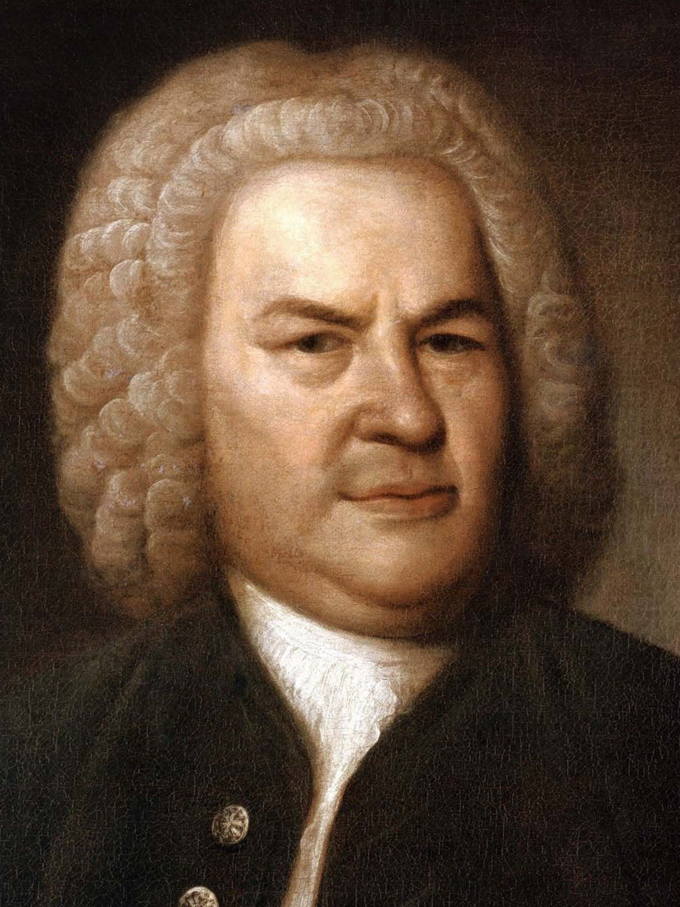

Johann Sebastian Bach
|  |
Johann Sebastian Bach[1] (31 March [O.S. 21 March] 1685 – 28 July 1750)was a German composer and musician of the Baroque period. He enriched established German styles through his skill in counterpoint, harmonic and motivic organisation, and the adaptation of rhythms, forms, and textures from abroad, particularly from Italy and France. Bach's compositions include the Brandenburg Concertos, the Goldberg Variations, the Mass in B minor, two Passions, and over 300 sacred cantatas of which 190 survive.[2] His music is revered for its technical command, artistic beauty, and intellectual depth.
Bach was born in Eisenach, Saxe-Eisenach, into a great musical family. His father, Johann Ambrosius Bach, was the director of the town musicians, and all of his uncles were professional musicians. His father probably taught him to play the violin and harpsichord, and his brother, Johann Christoph Bach, taught him the clavichord and exposed him to much contemporary music.[3] Apparently at his own initiative, Bach attended St. Michael's School in Lüneburg for two years. After graduating he held several musical posts across Germany: he served as Kapellmeister (director of music) to Leopold, Prince of Anhalt-Köthen, Cantor of the Thomasschule in Leipzig, and Royal Court Composer to Augustus III.[4][5] Bach's health and vision declined in 1749, and he died on 28 July 1750. Modern historians believe that his death was caused by a combination of stroke and pneumonia.[6][7][8] Bach's abilities as an organist were respected throughout Europe during his lifetime, although he was not widely recognised as a great composer until a revival of interest and performances of his music in the first half of the 19th century. He is now generally regarded as one of the greatest composers of all time.[9] Johann Sebastian Bach was born in Eisenach, Saxe-Eisenach, on 21 March 1685 O.S. (31 March 1685 N.S.). He was the son of Johann Ambrosius Bach, the director of the town musicians, and Maria Elisabeth Lämmerhirt.[10] He was the eighth child of Johann Ambrosius, (the eldest son in the family was 14 at the time of Bach's birth)[11] who probably taught him violin and the basics of music theory.[12] His uncles were all professional musicians, whose posts included church organists, court chamber musicians, and composers. One uncle, Johann Christoph Bach (1645–93), introduced him to the organ, and an older second cousin, Johann Ludwig Bach (1677–1731), was a well-known composer and violinist. Bach drafted a genealogy around 1735, titled "Origin of the musical Bach family".
Bach's mother died in 1694, and his father died eight months later.[5] Bach, aged 10, moved in with his oldest brother, Johann Christoph Bach (1671–1721), the organist at St. Michael's Church in Ohrdruf, Saxe-Gotha-Altenburg.[14] There he studied, performed, and copied music, including his own brother's, despite being forbidden to do so because scores were so valuable and private and blank ledger paper of that type was costly.[15][16] He received valuable teaching from his brother, who instructed him on the clavichord. J.C. Bach exposed him to the works of great composers of the day, including South German composers such as Johann Pachelbel (under whom Johann Christoph had studied) and Johann Jakob Froberger; North German composers;[3] Frenchmen, such as Jean-Baptiste Lully, Louis Marchand, Marin Marais; and the Italian clavierist Girolamo Frescobaldi. Also during this time, he was taught theology, Latin, Greek, French, and Italian at the local gymnasium.[17]
At the age of 14, Bach, along with his older school friend Georg Erdmann, was awarded a choral scholarship to study at the prestigious St. Michael's School in Lüneburg in the Principality of Lüneburg.[18] Although it is not known for certain, the trip was likely taken mostly on foot.[17] His two years there were critical in exposing him to a wider facet of European culture. In addition to singing in the choir he played the School's three-manual organ and harpsichords.[17] He came into contact with sons of noblemen from northern Germany sent to the highly selective school to prepare for careers in other disciplines.
While in Lüneburg, Bach had access to St. John's Church and possibly used the church's famous organ, built in 1549 by Jasper Johannsen, since it was played by his organ teacher Georg Böhm.[19] Given his musical talent, Bach had significant contact with Böhm while a student in Lüneburg, and also took trips to nearby Hamburg where he observed "the great North German organist Johann Adam Reincken".[19][20] Stauffer reports the discovery in 2005 of the organ tablatures that Bach wrote out when still in his teens of works by Reincken and Dieterich Buxtehude, showing "a disciplined, methodical, well-trained teenager deeply committed to learning his craft".[19]